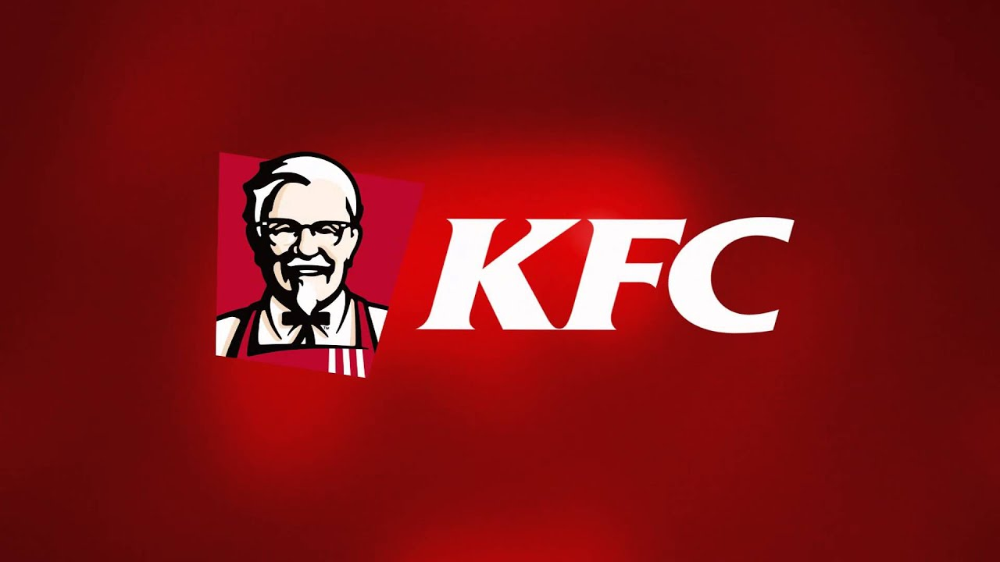

Home |
About |
Contacts |
Products |
Main Menu
This is KFC's History Page
- History of KFC
- KFC (Kentucky Fried Chicken) was founded by Colonel Harland Sanders, an entrepreneur who began selling fried chicken from his roadside restaurant in Corbin, Kentucky, during the Great Depression.
Sanders identified the potential of restaurant franchising, and the first "Kentucky Fried Chicken" franchise opened in Salt Lake City, Utah, in 1952
